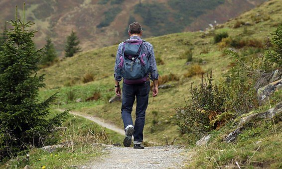
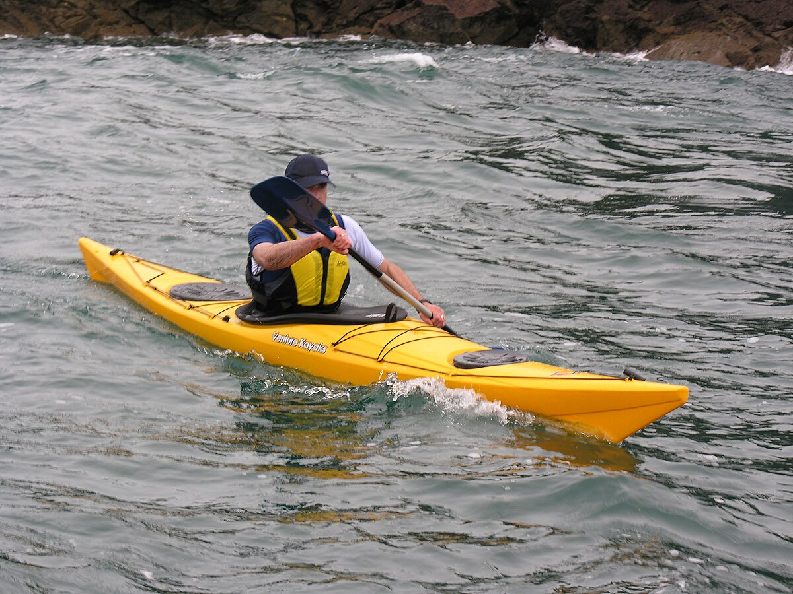
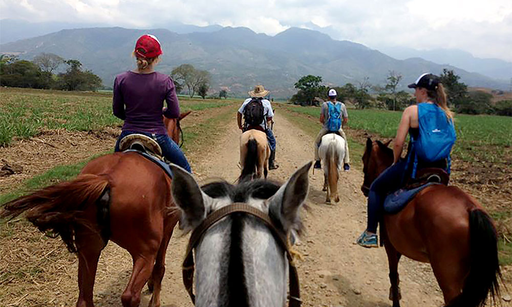
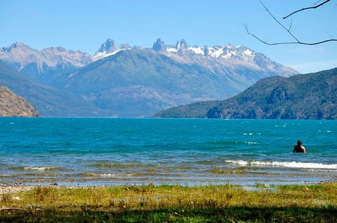

<html lang="en"></html>
<head>
    <meta charset="UTF-8">
    <meta name="viewport" content="width=device-width, initial-scale=1.0">
    <title>Document</title>
    <link rel="stylesheet" href="../css/actTuristicas.css">
</head>
<body>
    <header>

        <div id="contMenu">
            <div id="contLogo">
                
            </div>
            <nav>
                <ul>
                    <li><a href="../index.html">Inicio</a></li>
                    <li><a href="">Secciones</a>
                        <ul>
                            <li><a href="paginas/faunaYflora.html">Fauna y Flora</a></li>
                            <li><a href="#contUbi">Ubicación</a></li>

                        </ul>
                    </li>
                    
                    <li><a href="">Contactos</a></li>
                    <li><a href="">Ingresar</a></li>
                </ul>
            </nav>
        </div>
    </header>
        
    <div class="contenedores">
        <div id="contImg1">
            
        </div>
        <div id="contTitulo1">
            <h1 id="titulo1">Senderismo y Trekking</h1>
        </div>

        <div id="contInfo1">
            <p id="info1">Existen rutas para todos los niveles: desde circuitos principiantes, que requieren escasa preparación física, hasta aquellos expertos que atraviesan rutas sinuosas con distintos grados de dificultad.
                Los senderos de media y alta dificultad requieren que los visitantes se informen previamente en el puesto de control localizado en la portada de ingreso al Parque Nacional.</p> 
        </div>   
    </div>

    <div class="contenedores">
        <div id="contImg2">
            
        </div>
        <div id="contTitulo2">
            <h1 id="titulo2">Kayak</h1>
        </div>

        <div id="contInfo2">
            <p id="info2">Si buscás pasar un hermoso día con amistades o pareja, las travesías en kayak son una alternativa perfecta. Como el parque no cuenta con alquiler de kayaks, quienes quieran llevar el suyo deben registrarse previamente -sin excepción- en el destacamento de Prefectura Nacional ubicado en el puerto.</p> 
        </div>   
    </div>

    <div class="contenedores">

        <div id="contImg3">
            
        </div>
        <div id="contTitulo3">
            <h1 id="titulo3">Pesca deportiva</h1>
        </div>

        <div id="contInfo3">
            <p id="info3">Del 1° de noviembre al 1° de mayo inclusive de cada año los lagos y ríos de la zona están habilitados para recibir a quienes gozan de esta actividad concienciada con el medio ambiente.
                En el Parque Nacional Lago Puelo la pesca está reglamentada. </p> 
        </div>   
    </div>

    <div class="contenedores">
        <div id="contImg4">
            
        </div>
        <div id="contTitulo4">
            <h1 id="titulo4">Cabalgatas</h1>
        </div>

        <div id="contInfo4">
            <p id="info4">La manera ideal para descubrir los senderos cordilleranos entre bosques nativos de ciprés y coihue, vadeando ríos y arroyos y recorriendo la costa del lago color turquesa.</p> 
        </div>   
    </div>

    <div class="contenedores">
        <div id="contImg5">
            
        </div>
        <div id="contTitulo5">
            <h1 id="titulo5">Playa</h1>
        </div>

        <div id="contInfo5">
            <p id="info5">De acceso gratuito, La Playita es el único espacio habilitado para actividades balnearias.
                Está en la cabecera norte del Lago Puelo y es una de las pocas playas arenosas de la región. Cuenta con guardavidas.</p> 
        </div>   
    </div>

</body>
</html>